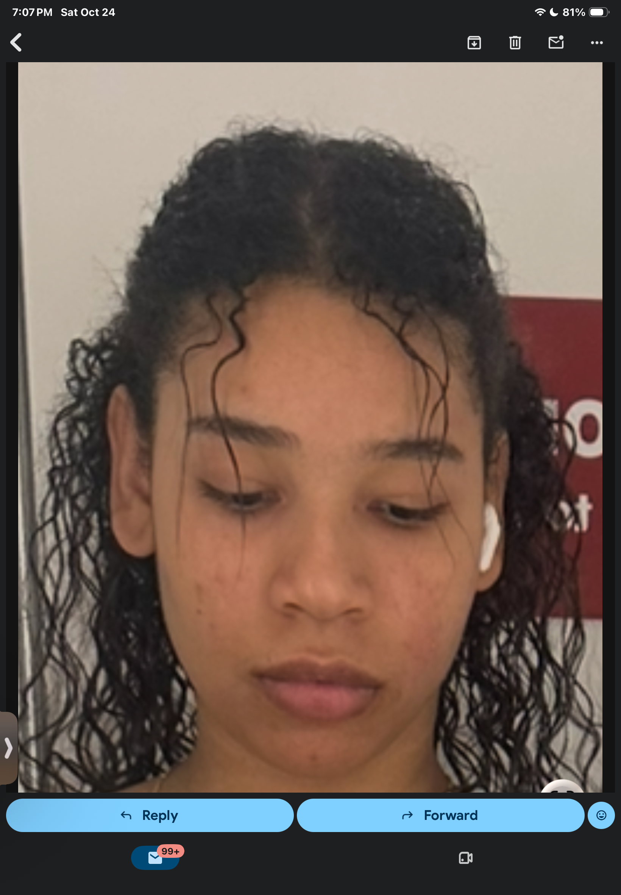
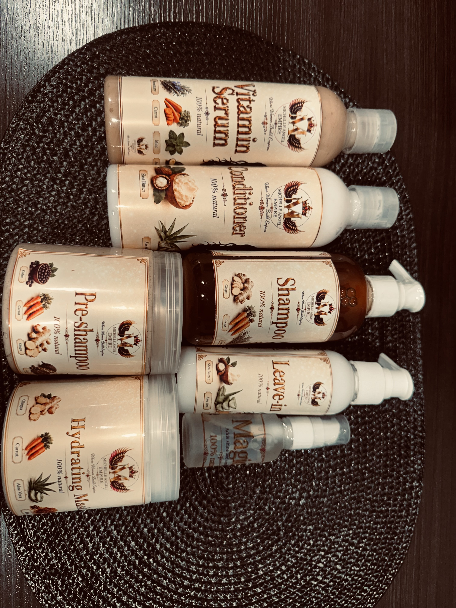
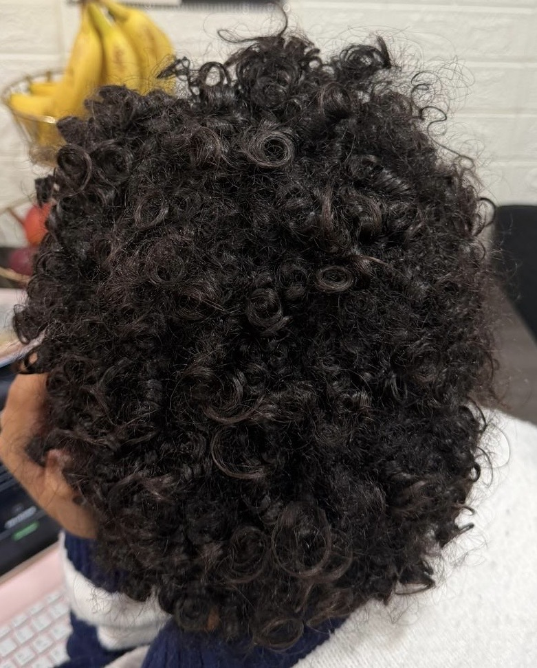
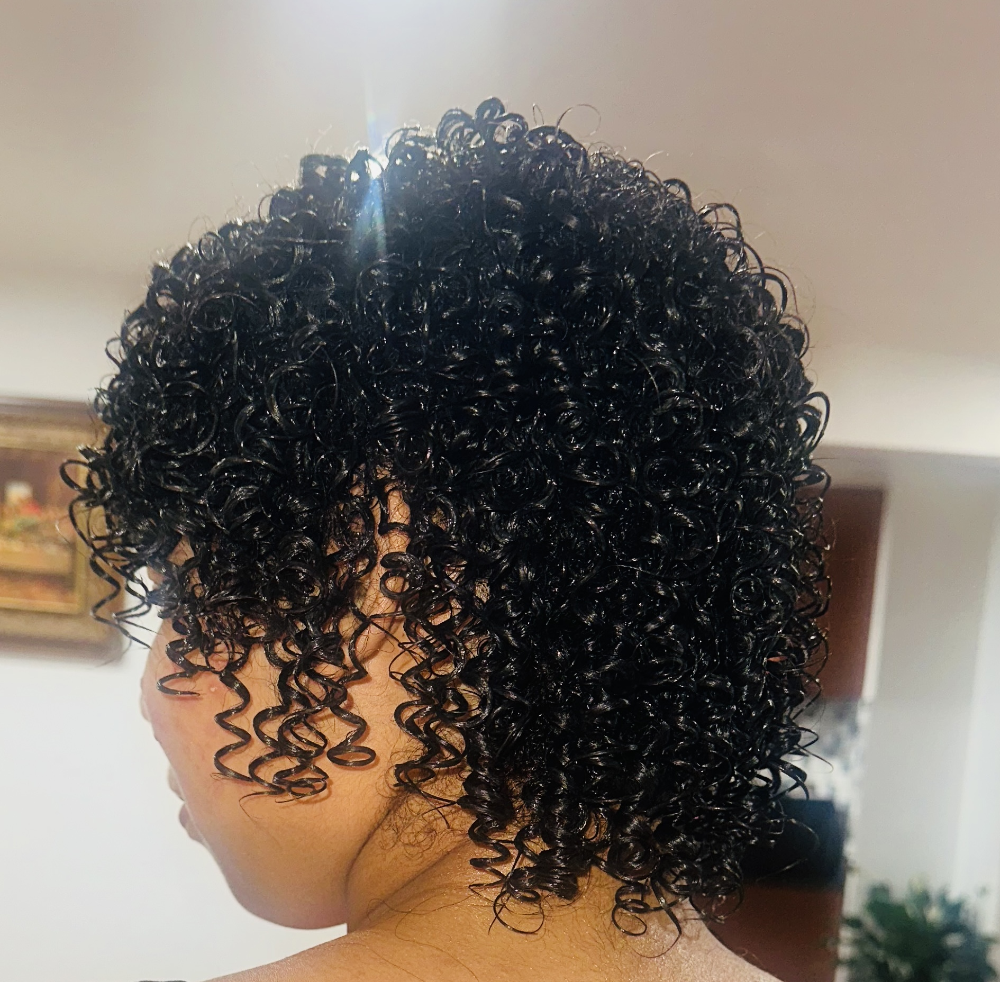
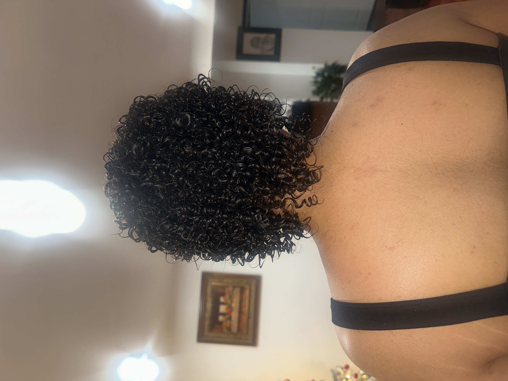

🍓 A Little About Me 🍓

About Me
♡ My curls, my journey & a little piece of me ♡


A Little About Me ♡
I chose curly hair for my website because I want people to embrace their natural curls and not be ashamed of them or feel like they have to straighten or perm their hair. Trust me, I know because I have cut all of my hair off, permed it twice, and I still decided to start over and embrace my natural curls.
My Hair Journey
🍓From where I started to learning how to love and style my curls.

Before My Hair Journey — Disaster but Bold ♡

The Products Behind the Curls 🍓


Before Wash — Curl Reset ♡

After Wash & Styling — Curls Are Back ✿

After Styling — Learning to Love My Curls ♡
Things I Love ♡
Watching Movies
I love watching movies of any genre, but especially horror movies because I like seeing how scared I can get. I just love the feeling and the trauma that comes with watching horror and scary movies.
Reading
I started reading when I was in middle school and discovered that reading was actually not that bad. Since then, I have loved reading physical books, stories on the internet, webtoons, and anything else that catches my interest.
Cooking
I really got into cooking one summer. Since then, I haven't been cooking regularly or very often, but I still enjoy watching recipes and trying them out whenever I can.
♡
♡